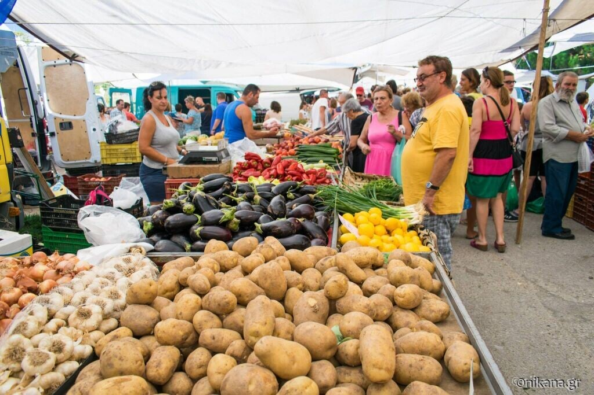
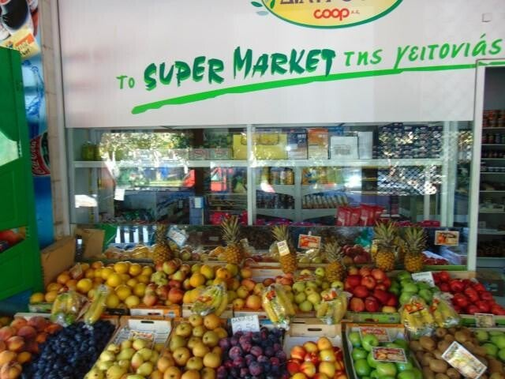

Daarnaast is er een kleine groente markt waar voornamelijk lokale producten zoals tomaten, uien, watermeloenen worden verkocht. Deze markt richt zich vooral op de lokale bevolking en is minder interessant voor toeristen die op zoek zijn naar een uitgebreide marktbeleving.
Groentemarkt

